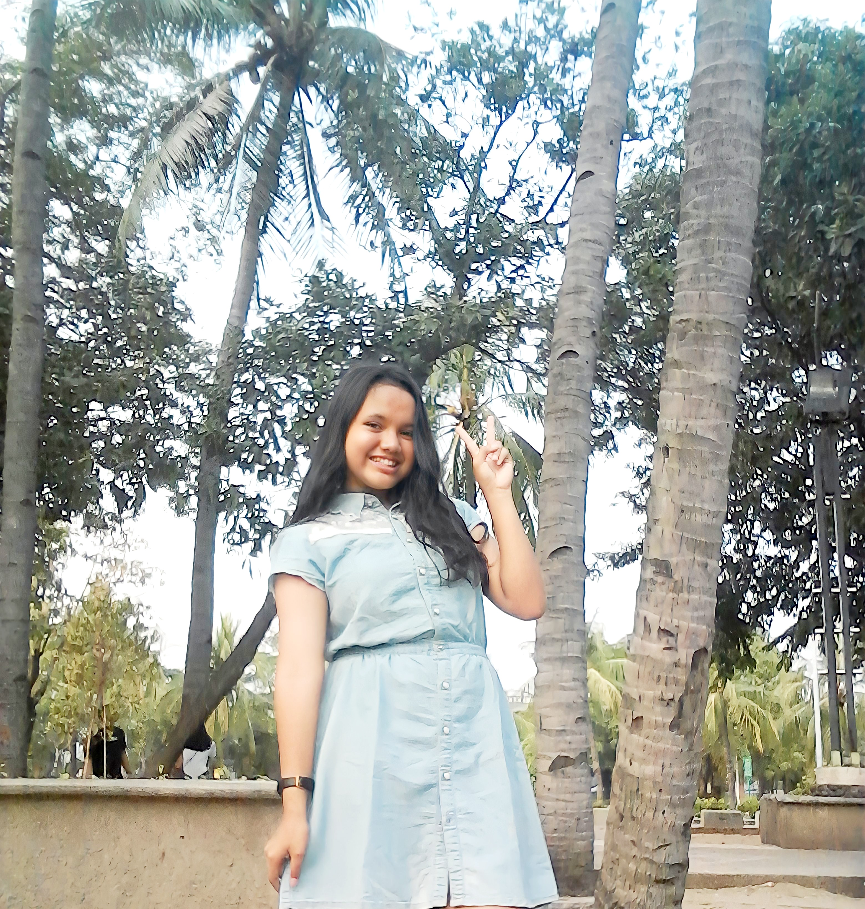

Apa Yang di Katakan Masyarakat Tentang Wisata di Jakarta
Feedback Dari Masyarakat

Di jakarta sangat banyak Tempat wisata dan letaknya sangat strategis, transportasi umum di jakarta juga sangat terintegrasi jadi memudahkan kita untuk mengunjungi tempat tempat wisata di jakarta.
Ilham Kurniawan
Di jakarta sangat banyak tempat wisata yang dapat kita kunjungi, dan lingkungan di sana sangat bersih dan terjaga. Kita juga bisa menemukan banyak sekali tempat yang bisa di jadikan spot foto karena arsitektur bangunannya yang indah dan menarik.
Yunita Indahsari
Anggota Kelompok

2213000023
2213000024
2213000019
2217000004
2214000004
2214000030
2214000021
2214000019

Kementrian Pariwisata & Ekonomi Kreatif Republik Indonesia
Gedung Sapta Pesona, Jl. Medan Merdeka Barat No.17, RT.2/RW.3, Gambir, Jakarta, Kota Jakarta Pusat, Daerah Khusus Ibukota Jakarta 10110
(021) 3838552
https://www.kemenparekraf.go.id/